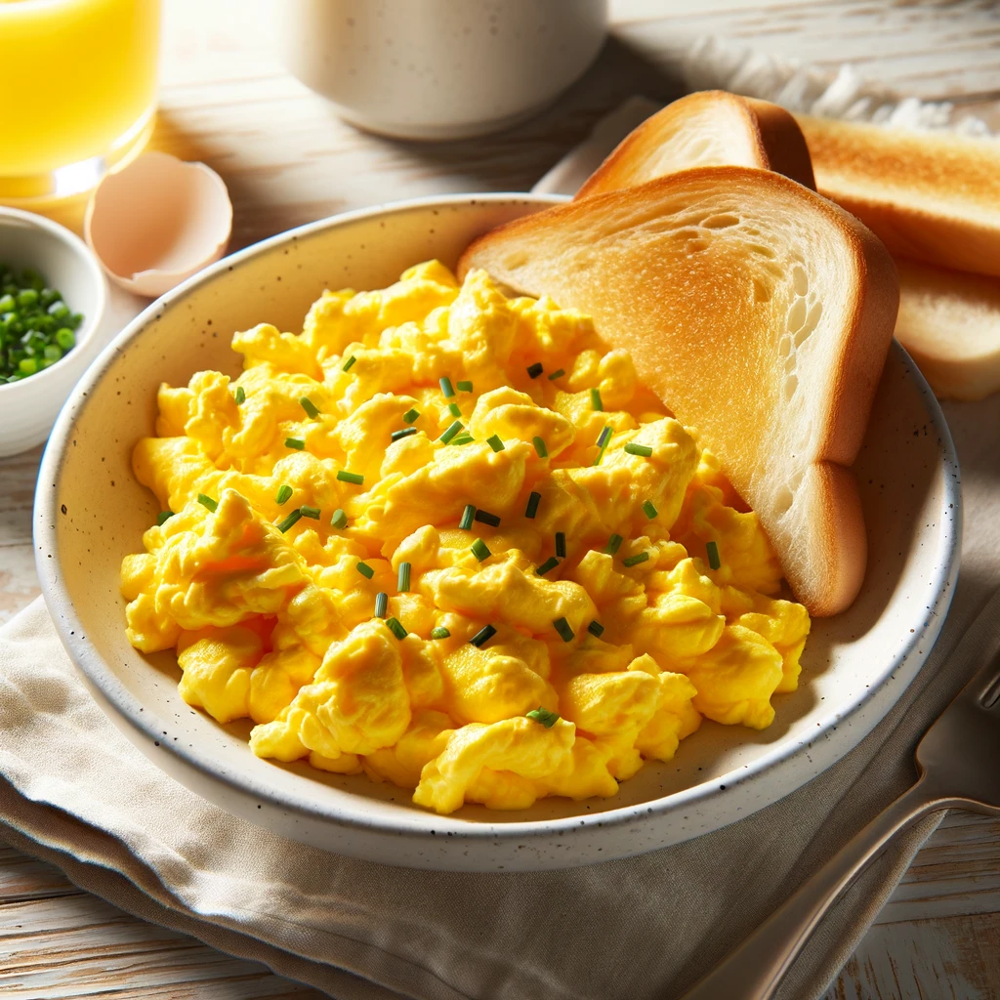

Scrambled Eggs

Description of Recipe
Enjoy these light and fluffy scrambled eggs, a simple yet satisfying breakfast choice. They are served with a sprinkle of chives and a side of toasted bread, making it a complete and nourishing meal.
Ingredients
- 4 large eggs
- 2 tablespoons milk or cream
- Salt and pepper to taste
- 1 tablespoon butter
- Fresh chives, finely chopped (for garnish)
- Slices of bread (for toasting)
Steps
- In a bowl, whisk together the eggs, milk, salt, and pepper until well combined.
- Heat the butter in a non-stick skillet over medium heat until melted.
- Pour in the egg mixture. As the eggs begin to set, gently pull the eggs across the pan with a spatula, forming large soft curds.
- Continue cooking until the eggs are thickened and no visible liquid egg remains, but the eggs are still moist.
- Remove from heat, sprinkle with chopped chives, and serve immediately with toasted bread on the side.
Enjoy your meal!